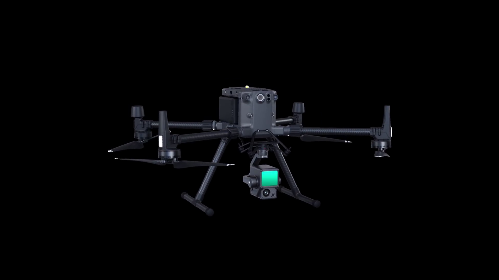
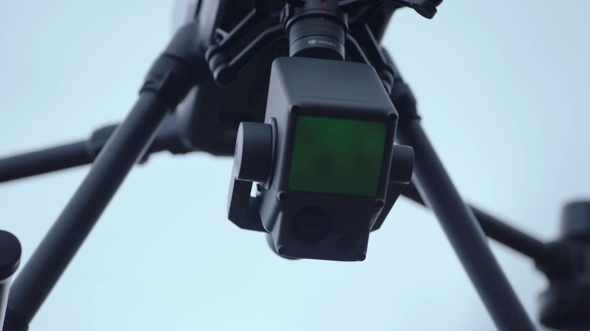
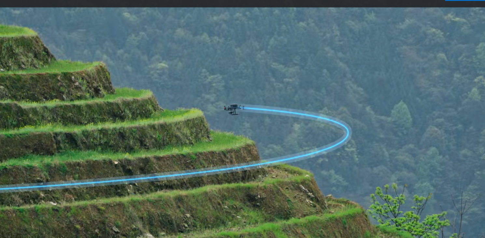
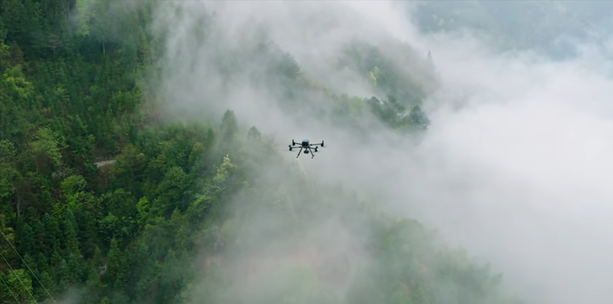

Lidar Drone Surveying
in Costa Rica
Centimeter-accurate terrain data for real estate, construction, and agriculture. Lidar mapping, aerial photography & GPS geopositioning across all of Costa Rica.
Our Services
Professional aerial surveying solutions using the latest drone technology.

Lidar Drone Surveying
Laser scanning captures terrain data with centimeter accuracy — penetrating forest canopy to map the true ground surface beneath, even in dense Costa Rican jungle.
Learn about Lidar →
Aerial Video & Photography
Professional 4K aerial video and high-resolution photography for real estate listings, construction progress, property marketing, and promotions across Costa Rica.
Get a video quote →
GPS Geopositioning
GPS RTK base station determines exact geographic coordinates for any location — essential for precise boundary demarcation and topographic surveys.
Learn about GPS →How LiDAR Drone Mapping Works
Watch our full presentation — see how we capture centimeter-accurate 3D terrain with LiDAR drones, from flight planning to final maps, across Costa Rica.
Our Equipment
Professional-grade hardware engineered for precision: the DJI Matrice 350 RTK platform paired with the Zenmuse L1 Lidar sensor.

DJI Matrice 350 RTK
An industrial-grade flight platform with RTK positioning, long flight endurance, and all-weather reliability — the backbone of every mission we fly.

Zenmuse L1 Lidar Sensor
A Livox Lidar module, high-accuracy IMU, and 1-inch CMOS camera on a stabilized gimbal — capturing 240,000 points per second with centimeter accuracy.
Our Projects
Over a decade of drone surveys across Costa Rica — from rainforest to coastline.


See It in Action
A short aerial clip from a recent Matrice 350 RTK mission over the Costa Rican landscape.
How We Work
A streamlined three-step process — from mission planning to final data delivery.

Virtual Mission Planning
Mission planning software lets us visualize the drone's flight path and run time before a single flight is made.

Flight Mission Execution
Our team executes the planned mission on-site to capture photo and lidar data for centimeter-accurate 3D mapping.

Capture, Analyze, Visualize
Data is processed through our software to produce high-quality 3D photogrammetry and topographic maps.
Getting started is very easy with us
Fill out our online service request with your location and project size — we'll email you a free quote.
Get a Quote NowRequest a Quote
Takes 5 minutes. Fill out our online form and receive a free quote for your project.
Select Date & Sign Contract
Once the quote is agreed, pick a date. We send a contract and invoice — 50% deposit required on signature.
Mission Execution & Delivery
We fly, process the data, and deliver your maps and reports in 3–7 business days once the mission is complete.

Centimeter Accuracy Mapping
The Zenmuse L1 integrates a Livox Lidar module, a high-accuracy IMU, and a 1-inch CMOS camera on a 3-axis stabilized gimbal — the professional standard for aerial surveying.
What Our Clients Say
⭐⭐⭐⭐⭐ 5.0 / 5 · 25 Google reviews
"Drone Survey Costa Rica did an amazing job with drone LiDAR for one of my listings. Professional, reliable, and easy to work with. The quality of the survey was excellent — precise data that was incredibly useful."
"I've used Drone Survey Costa Rica for the past 2 years on 20+ occasions. Very professional and the data you get from Lidar for land planning, engineering, and design is incredible. The best tool a developer or land owner could use."
"Very easy to work with and very professional. We booked via their website, received a quote by email, and they came to fly the drone at our new property. All files were easy to download. Great service — highly recommended."
Goal Driven
Autonomous Workflow
Expert Team of Pilots
Accurate & Precise
Want to talk to a real human before you commit?
Lidar technology is powerful — and most people are still learning what it can do. We have 7+ years of experience and 25 five-star reviews. Ask us anything.
Frequently Asked Questions
How much does a drone survey cost in Costa Rica?
Our surveys start at $1,000 USD for up to 5 hectares — this includes the flight, GPS base station, full data processing, and all deliverables. Each additional hectare beyond 5 is $80 USD. Travel fees from San José apply. Projects over 100 hectares qualify for special pricing. Get a free quote in minutes.
What is the difference between Lidar and photogrammetry?
Lidar uses laser pulses and can penetrate dense vegetation to map the ground below — ideal for Costa Rica's forested terrain. Photogrammetry uses overlapping aerial photos and is cost-effective for open land. We offer both and will recommend the best option for your project.
How accurate is a drone survey in Costa Rica?
Our surveys with the DJI Zenmuse L1 Lidar achieve centimeter-level accuracy (typically 1–3 cm horizontal, 2–5 cm vertical). Combined with GPS RTK, we deliver data that meets engineering and legal standards.
How long does a drone survey take?
Field data collection typically takes 2–8 hours depending on size and terrain. Data processing and delivery of your 3D maps and reports takes 3–7 business days after the flight.
Do you survey all regions of Costa Rica?
Yes — we cover all of Costa Rica including San José, Guanacaste, the Central Valley, Caribbean coast, Southern Zone, and remote areas. We handle all required DGAC drone flight permits.